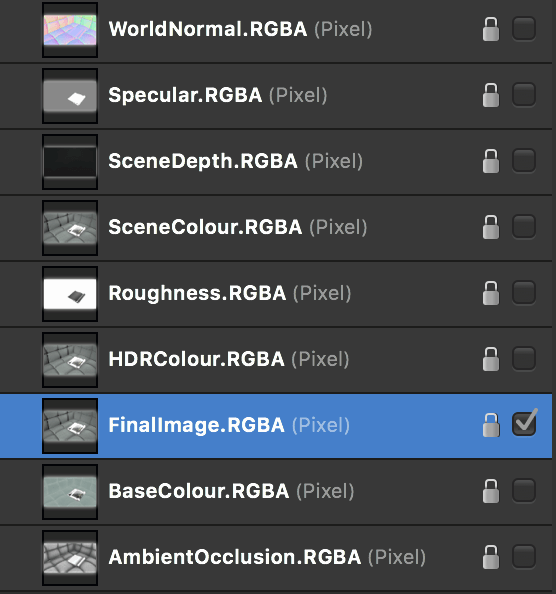

Affinity Photo 2 has full OpenEXR 32-bit document support, including multichannel (or "multilayer") import and export.
OpenColorIO Integration
With an OpenColorIO configuration (see OpenColorIO for more information), OpenEXR documents with a valid color space affix (eg filename_acescg.exr) will be converted from that color space to scene_linear upon import.
Additional configuration
Additional OpenEXR options are available from the Color options on the Settings (or Preferences) menu:
Associate OpenEXR alpha channels—when enabled, alpha channel information is merged to its associated RGB pixel layer's alpha channel. By default (disabled), imported alpha channels are imported as separate layers with an .A affix.
Post divide EXR colors by alpha—when enabled, divides color channels by the alpha channel.
Perturb zero EXR alpha—when enabled, alters zero alpha information so post-division with color channel information can be achieved if Post divide EXR colors by alpha is enabled. By default (disabled), zero alpha information is left untouched.
Multichannel import/export
Photo supports multichannel OpenEXR documents for both import and export.
Multichannel import:
Each channel is imported to a discrete layer in the Layers panel.
Each layer retains its affix (e.g., .RGBA, .XYZ).
Layers can be hidden or shown and edited individually.
Multichannel export:
Each discrete layer with its channel affix (e.g., .RGBA) is exported to its own channel.
All layers are exported to channels regardless of whether they are hidden or shown at the time of export.
In order to export as multichannel OpenEXR, either the correct preset must be chosen, or the multichannel setting must be enabled on the OpenEXR export dialog. See below for more information.

An example of how a multichannel OpenEXR document looks once imported.To export a multichannel OpenEXR document:
From the File menu, choose Export.
Select the EXR export format.
From the Preset pop-up menu, select OpenEXR 32-bit linear (layered).
(Optional) Access the More dialog to configure the multilayer settings:
Include unknown channels—channels whose type cannot be determined will still be exported as a single luminance-based channel.
Compression—determine a compression format to use for a reduced file size. Compression may also be disabled entirely.
Image pixels—choose whether to encode Image channels (RGBA etc) as 16-bit (half float) or 32-bit (full float).
Spatial pixels—choose whether to encode Spatial channels (XYZ etc) as 16-bit (half float) or 32-bit (full float).
Other pixels—choose whether to encode other/undetermined channels as 16-bit (half float) or 32-bit (full float).
Choose Export to export the document to a chosen filename and directory.